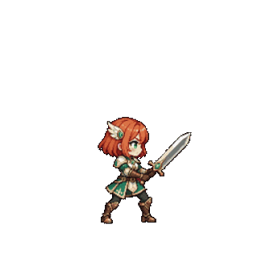
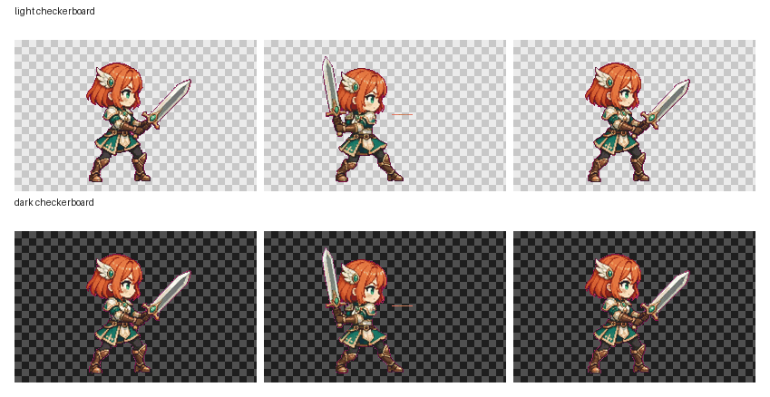

獨立 CLI，也是 Claude Code 與 Codex 的 skill。自動色鍵洋紅／綠幕、裁掉靜止尾段、跑 QA。全部在你的機器上，不必上傳、不必付雲端費。
python scripts/vgs.py make source.mp4 --out ./out
90 幀 · 3.75 秒 · 緊裁去溢色 · 頁面顏色就是背景
python scripts/install.py --target claude
# 或 --target codex
python scripts/vgs.py make \
examples/chibi-running-dash/source.mp4 \
--out /tmp/chibi-gif平坦高飽和棚景（洋紅／綠）會被去掉。低飽和白底會保留，免得誤傷膚色。
裁靜止尾段、量測閃爍與殘留鍵色。WARN 要人看，FAIL 不交付。
--pixel 做 96 格點陣，--sprite 與 --mp4 一併輸出。
Claude Code 用 /video-gif-studio，Codex 用 $video-gif-studio。

上排淺棋盤、下排深棋盤；開頭、中段與結尾各一幀。